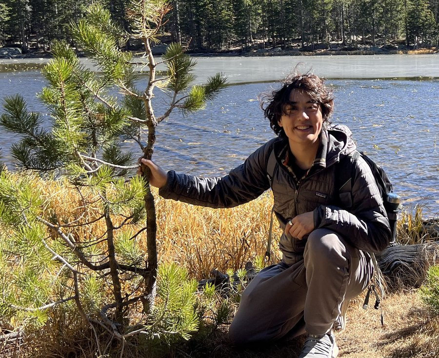

Hey! I'm Kenny. I also go by Kenneth.
I'm deeply grateful to be in a slice of the world where anyone can be and do anything, where gatekeeping is increasingly seen as a thing of the past. I care deeply about breaking down artificial barriers and making this possible in other parts of the world, too. I previously worked on voice AI and human-computer interaction for accessibility, word processors designed from the ground up to work on slow devices, AirDrop but for Windows, and moldable, personalized AI harnesses. I also have a policy blog where I write about my own flavor of Abundance, and strive to make the world an open, free, fluid, and un-gatekept place.
I care greatly about power accumulation in AI. I'm interested in ways to personalize AI, help models stay aligned with their end-users, and enhance human autonomy. I also seek to design schemes-- both technical and policy-- that help us use AI as a force to equalize power imbalance, rather than concentrate it in existing institutions.
In the past, I was an Anthropic Fellow, where I worked on coding agent user-alignment, an intern at Jane Street, where I worked on large-scale data processing pipelines, an intern at AMD, where I worked on making local small LLMs possible, and an intern at Red Hat, where I worked on AI for a11y. I also worked on Vision Zero traffic safety for the 27th Ward Alderman Red Burnett in Chicago, and canvassed for Zellnor Myrie's NYC Mayoral campaign.

This website design was inspired by the shores of Lake Michigan here in Chicago.